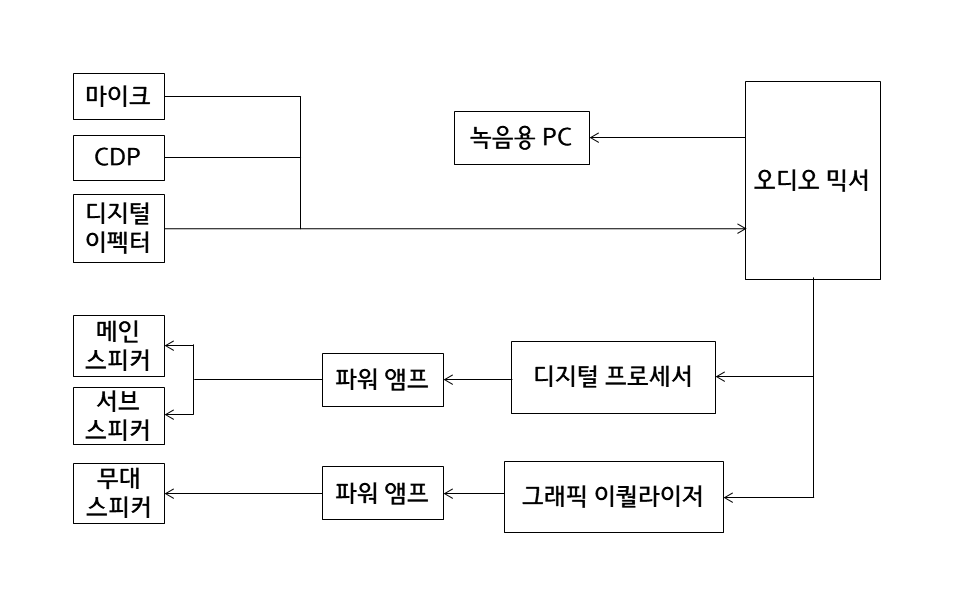

학교 방송
PA 방송
SR 방송
A/V 방송
SR(Sound Reinforcement) 방송 (음향보강 시스템)
정의
다목적으로 사용할 수 있는 공간의 음향 시스템 행사(입학식, 졸업식 등), 학술 세미나, 강연 등의 음성 전달 목적과 간단한 밴드공연같은 음악 공연.
구성도

관련 링크
inter-M 조달정보
ⓒ 2019. Nogojiri all rights reserved.